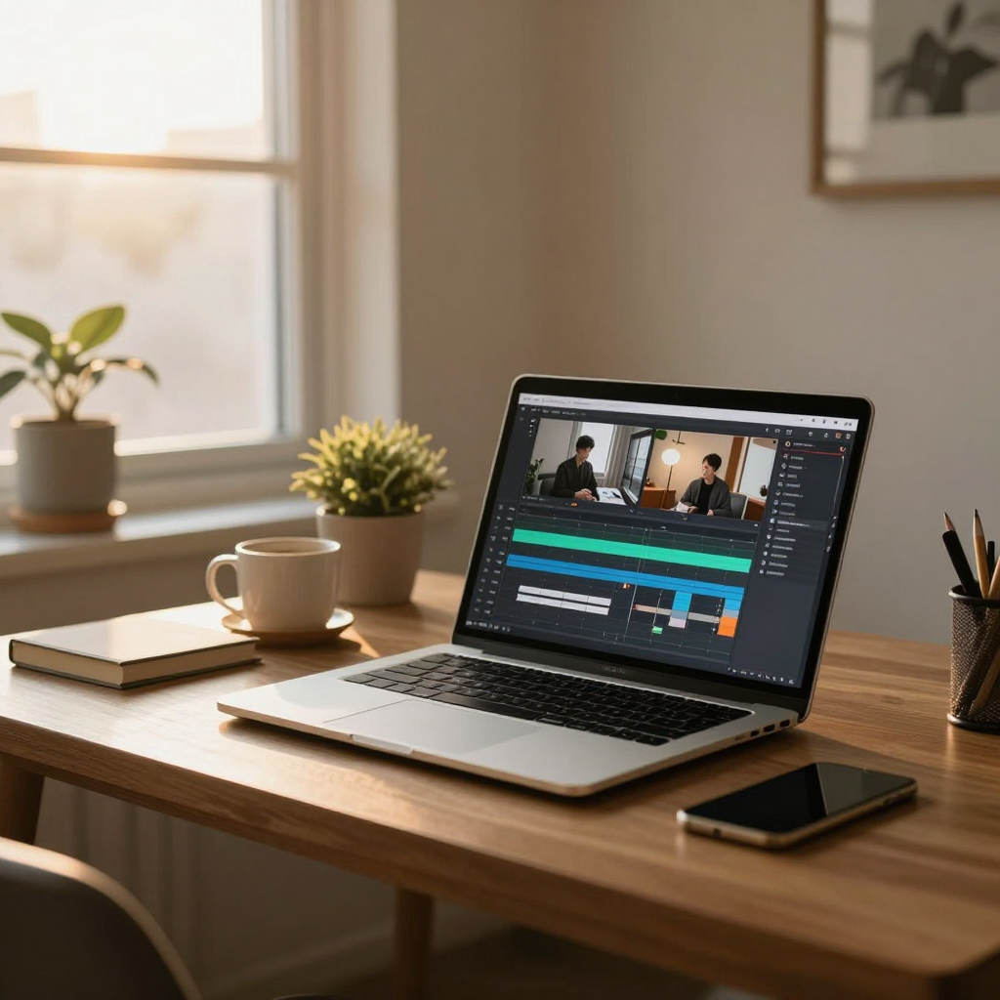

이 맥북(M4 Max·128GB)에서 로컬 이미지 생성이 실제로 되는지 mflux + Z-Image Turbo 로 직접 생성까지 돌려 확인한 조사. 상업 사용 가능한 후보 3계열과 파이프라인(gpt_image·nanobanana API) 대비 위치를 정리한다.
추천 구성은 이렇다. 기본은 Z-Image Turbo — 속도·품질·라이선스(Apache 2.0) 모두 걸리는 게 없다. 편집(img2img·멀티 레퍼런스)이 필요하면 FLUX.2 klein 4B(Apache 2.0) 또는 Qwen-Image-Edit-2511(Apache 2.0)을 얹는다. 도구는 스크립트 파이프라인엔 mflux(CLI·Python API), 손으로 탐색할 땐 Draw Things(무료 GUI) 조합이다.
주의할 라이선스 함정: FLUX.2 계열은 4B(klein)만 Apache 2.0 이고 klein 9B·dev(32B)는 비상업 라이선스다. 수익 채널 콘텐츠에 쓰는 이 프로젝트에선 9B·dev 를 제외해야 한다.
mflux 를 uv tool install --python 3.12 mflux 로 설치하고 Z-Image Turbo(8bit 양자화, 9스텝)를 세 번 돌렸다.
모델 저장소 다운로드는 31GB(bf16 원본 기준)였다.
| 실행 | 해상도 | 확산 시간 | 스텝당 | 전체(로드 포함) | 피크 메모리 |
|---|---|---|---|---|---|
| 1차 (부하 보통) | 1024×1024 | 116초 | ~13초 | 149초 | 31.9GB |
| 2차 (부하 심함) | 1024×1024 | 197초 | ~22초 | 210초 | 31.9GB |
| 3차 (9:16 세로) | 1088×1920 | 443초 | ~49초 | 462초 | 38.9GB |
측정 중 로드 평균이 74(16코어 대비 4~5배 과부하)였다 — 다른 Claude Code 세션들이 같은 머신에서 돌던 상태다. 한가한 머신에서는 1024² 가 1~2분대로 내려올 여지가 크다. 9:16 은 픽셀 수 2.1배에 어텐션 비용이 제곱으로 붙어 4배 안팎으로 느려진다.

2026년 8월 기준, 이 사양에서 돌 수 있고 품질이 현역인 모델은 세 계열이다. 크기·라이선스는 Hugging Face 모델 카드(1차 출처)로 확인했다.
| 모델 | 크기 | 라이선스 | 스텝 | 강점 | 편집(img2img) |
|---|---|---|---|---|---|
| Z-Image Turbo 기본 추천 | 6B | Apache 2.0 상업 OK | 8~9 | 속도 대비 사실감 최상, 적은 스텝 | 별도 모델(Z-Image-Edit) |
| FLUX.2 klein 4B | 4B | Apache 2.0 상업 OK | 4 | 가장 빠름, 생성·편집 단일 모델 | 멀티 레퍼런스 편집 내장 |
| Qwen-Image (20B) + Edit-2511 | 20B | Apache 2.0 상업 OK | Lightning LoRA 로 4~8 | 프롬프트 이해·타이포그래피(영·중) 최상급 | Edit 계열 별도 모델, 성숙 |
| FLUX.2 klein 9B | 9B | 비상업 제외 | 4 | 4B 보다 품질 위 | 내장 |
| FLUX.2 dev | 32B(+Mistral 인코더) | 비상업 제외 | — | 오픈 웨이트 품질 정점 | 내장 |
SDXL·FLUX.1·SD 3.5 같은 이전 세대도 물론 돌지만, 지금 새로 시작하면서 고를 이유는 없다. 품질·속도·라이선스 모두 위 세 계열이 앞선다.
커버·썸네일에 글자를 새겨 넣을 수 있는지는 별도 문제다. Z-Image·Qwen-Image 의 타이포그래피 강점은 영어·중국어 기준이고, 한글은 오픈 모델 전반의 약점이다.
이 프로젝트 파이프라인에는 영향이 없다 — 커버 배경은 텍스트 없는 이미지로 생성하고 글자는 렌더 템플릿에서 오버레이로 얹는 구조(계획 리뷰 P0 규칙)라, 모델의 한글 렌더링 능력과 무관하다. 글자가 박힌 이미지가 꼭 필요한 경우(카드뉴스류)는 지금처럼 gpt_image API 를 쓰거나 배경 생성 + HTML 오버레이로 우회한다.
Apple MLX 로 포팅된 이미지 생성 CLI·Python API. uv tool install --python 3.12 mflux 한 줄로 설치되고
33개 명령이 깔린다 — mflux-generate-z-image-turbo, mflux-generate-flux2,
mflux-generate-flux2-edit, mflux-generate-qwen, mflux-generate-qwen-edit 등
생성·편집·업스케일(SeedVR2)·ControlNet·LoRA 학습까지 커버한다. 헤드리스 실행이 되므로
지금의 서버 툴(gpt_image 등)과 같은 자리에 로컬 백엔드로 붙일 수 있다.
# 이번 실측에 쓴 명령
mflux-generate-z-image-turbo \
--prompt "..." --width 1088 --height 1920 \
--steps 9 --seed 42 -q 8 --output cover.png무료 맥 네이티브 앱(App Store). FLUX.2·Z-Image·Qwen-Image 를 모두 지원하고 LoRA 학습도 된다. Metal 최적화로 ComfyUI 보다 빠르다는 평이 많다. 프롬프트를 손으로 다듬으며 탐색할 때 적합하고, 자동화 파이프라인에는 mflux 쪽이 맞다.
노드 기반 워크플로가 필요할 때(다단계 합성·커스텀 파이프라인)만 고려. 맥에서도 돌지만 MLX 네이티브가 아니라 같은 모델 기준 mflux·Draw Things 보다 느린 경우가 많다.
social-flow 는 지금 gpt_image(OpenAI)·nanobanana(Gemini) API 로 이미지를 만든다. 로컬 전환의 손익은 명확하다.
| 로컬 (Z-Image Turbo 등) | API (gpt_image·nanobanana) | |
|---|---|---|
| 비용 | 0원 · 무제한 | 장당 과금 |
| 속도 | 1024² 2~3분대 (과부하 실측 기준) | 수 초~수십 초 |
| 품질(사진풍 배경) | 커버 배경으로 충분 (실측 확인) | 상급 |
| 한글 텍스트 | 사실상 불가 | gpt_image 는 가능 |
| 편집(img2img) | qwen-edit·flux2-edit 로 가능 | 성숙 |
| 프라이버시·오프라인 | 완전 로컬 | 외부 전송 |
결론은 대체가 아니라 보완이고, 이 분담은 조사 당일 플러그인에 채택·구현됐다(사용자 결정 2026-08-12).
서버에 image_local_generate 툴이 supertonic 클라이언트와 같은 방식(mflux CLI 서브프로세스)으로
추가되어 텍스트 없는 이미지(points 배경·성장 루프 첨부·시안 탐색)의 기본 경로가 됐고,
글자가 들어가거나 품질 상향이 필요한 건(커버 배경=썸네일·b-roll 소스·브랜딩)만 gpt_image 로 간다.
빌드된 서버로 512×512 를 23초에 생성해 동작을 확인했다.
filipstrand/Z-Image-Turbo-mflux-4bit,
Runpod/FLUX.2-klein-4B-mflux-4bit, OsaurusAI/Qwen-Image-mflux-4bit 등)를 쓰면
모델당 4~12GB 로 줄어 서너 계열을 얹어도 부담이 없다. FLUX.2 dev fp16(64GB급)만 피하면 된다.| 등급 | 내용 |
|---|---|
| 실측 | 이 맥북에서 직접 측정 — §02 생성 시간·피크 메모리·다운로드 용량, §04 한글 렌더링, 설치 절차 전체. |
| 1차 출처 | HF 모델 카드·공식 발표 — 모델 크기·라이선스·스텝 수(Z-Image Turbo, FLUX.2 klein 4B/9B·dev), HF API 검색(Qwen-Image 계열 공개 목록, mflux 사전 양자화 repo). |
| 2차 출처 | 블로그·리뷰 — Draw Things/ComfyUI 속도 비교, 타 기종 벤치마크. 참고만 하고 수치는 싣지 않았다. |